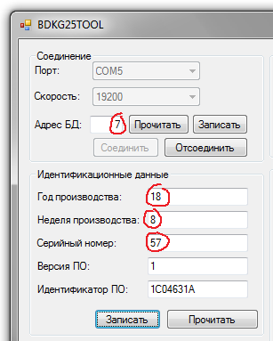
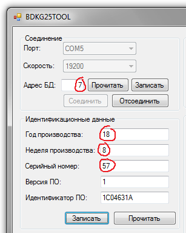

Прошивка БДКГ-25
- Подключить питание
- Подключить программатор

- Запустить STM32-LINK
- Target ⇒ Connect
- Target ⇒ Program & Verify
- Выбрать прошивку BDKG25_HAL_09_04_2018.hex (09.04.2018)
- Start

Если появляется такое окно с ошибкой:
Это значит, что устройство уже прошито, и прочитать или перезаписать прошивку нельзя. Чтобы убрать защиту, необходимо сделать следующее (Внимание! Существующая прошивка будет стёрта!) :
- Target ⇒ Option Bytes
- Readout Protection ⇒ Disabled
- Flash Section Protection ⇒ Unselect All
- Apply
- Защита снята, прошивка стерта

Проверить корректность прошивки можно подключив устройство к BDKG25_Tools (перед
подключением обязательно отсоединить/подключить ODU разъём):
 Для включения "расширенного" режима в любом поле набрать время с ":" ("15:53" например):
Год вводится, как 18 (а не 2018)

Для включения "расширенного" режима в любом поле набрать время с ":" ("15:53" например):
Год вводится, как 18 (а не 2018)
